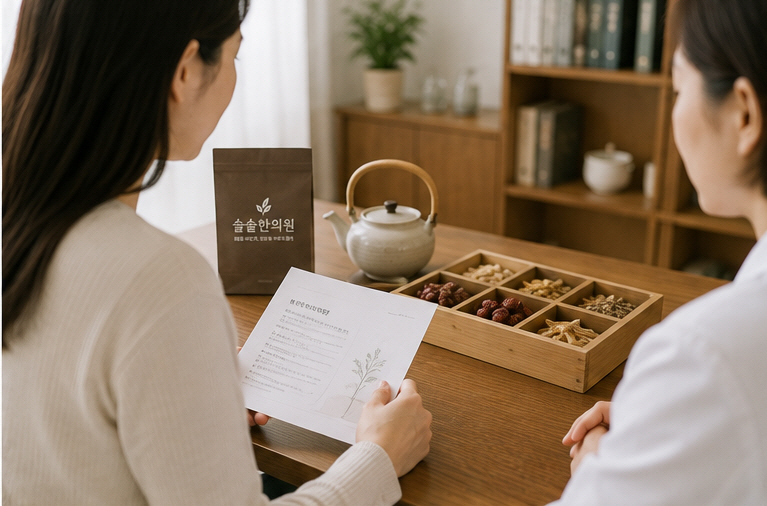
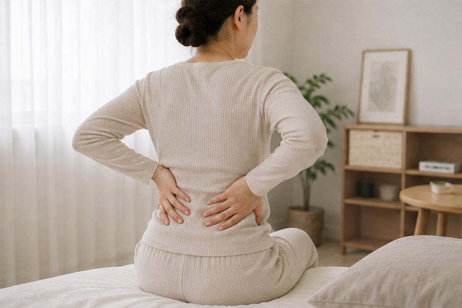

출산 후에는
아기뿐 아니라
산모의 회복도 중요합니다.
출산 후에는 피로와 기력저하, 허리·골반의 불편, 수면 부족 등 여러 변화가 한꺼번에 나타날 수 있습니다.
출산 후 몸의 변화부터 살펴봅니다
회복의 속도와 불편한 증상은 산모마다 다를 수 있습니다.
산후에는 어떤 부분을 이야기하면 좋을까요?
자연분만인지 제왕절개인지, 출산 후 얼마나 지났는지, 현재 수유 중인지 등을 먼저 확인합니다.
이와 함께 출산 후의 피로와 식욕, 수면, 대소변, 오로의 경과, 통증과 부종감 등 현재 느끼는 불편을 함께 이야기하시면 됩니다.

산후보약은 누구에게나 같은 처방이 아닙니다
출산했다고 해서 모든 산모에게 동일한 산후보약을 처방하는 것은 아닙니다.
출산 방식과 출산 후 경과, 수유 여부와 현재 복용 중인 약, 식욕과 소화, 수면, 대소변, 통증과 전반적인 기력 상태를 확인한 뒤 처방 방향을 상담합니다.
모유수유 중이라면 꼭 말씀해주세요
현재 모유수유 중인지, 완전모유수유인지 혼합수유인지 등을 진료 시 알려주세요.
현재 복용 중인 처방약, 일반의약품이나 건강기능식품 등이 있다면 함께 말씀해주시는 것이 좋습니다.
다른 의료기관에서 처방받은 약을 임의로 중단하거나 변경하지 마시고, 변경이 필요한 경우에는 해당 의료진과 상의해주세요.
출산 후 허리와 골반이 불편할 수 있습니다
출산 후에는 육아와 수유 과정에서 아기를 안거나 몸을 숙이는 시간이 늘면서 허리, 골반, 목과 어깨 등에 불편을 느끼는 경우도 있습니다.
현재 통증의 위치와 움직임, 출산 후 경과와 몸의 회복 상태를 확인한 뒤 필요한 경우 한의진료를 상담합니다.
출산 후 치료 방법과 강도는 산모의 현재 상태에 따라 달라질 수 있습니다.

생리통도 함께 살펴봅니다
생리 전후 하복부 통증뿐 아니라 함께 나타나는 여러 불편을 이야기해주세요.
생리통은 생리 전이나 생리 중 하복부가 아프거나 당기고, 허리 통증 등이 함께 나타나는 형태로 경험할 수 있습니다.
사람에 따라 두통, 메스꺼움, 피로감이나 컨디션 변화 등이 함께 나타나기도 합니다.
진료 시에는 통증이 언제부터 시작됐는지, 생리주기와 생리량, 평소와 다른 변화가 있는지 등을 함께 확인합니다.
하복부 통증
생리 전후 또는 생리기간 중 아랫배가 아프거나 묵직한 경우
허리 통증
생리기간에 허리가 뻐근하거나 통증이 함께 나타나는 경우
동반 불편
두통, 메스꺼움, 피로감 등 여러 증상이 함께 나타나는 경우
평소와 다른 변화가 있다면 확인이 필요합니다
생리통이나 출혈의 양상이 이전과 크게 달라졌다면 다른 원인이 있는지 확인하는 것이 중요할 수 있습니다.
- 이전에 없던 심한 생리통이 새롭게 나타난 경우
- 통증이 점점 심해지는 경우
- 생리기간이 아닌데 출혈이 반복되는 경우
- 생리량이 평소보다 크게 달라진 경우
- 일상생활이 어려울 정도의 통증이 반복되는 경우
이러한 경우에는 필요에 따라 산부인과 등 관련 의료기관의 검사와 진료를 함께 고려하시기 바랍니다.
집에서도 무리하지 않는 회복이 중요합니다
여성클리닉에서 자주 듣는 질문
산후보약은 언제부터 상담할 수 있나요?
출산 방식과 출산 후 경과, 현재 식사 가능 여부와 수유 상태 등이 산모마다 다를 수 있습니다. 특정 날짜를 모든 산모에게 동일하게 적용하기보다는 현재 몸 상태를 확인한 뒤 복용 시기를 상담하는 것이 좋습니다.
자연분만과 제왕절개 산후 관리는 다른가요?
분만 과정과 수술 여부, 출산 후 통증과 회복 상태가 다를 수 있으므로 진료 시 출산 방법과 출산 후 경과를 함께 확인합니다.
모유수유 중인데 한약을 먹을 수 있나요?
수유 여부는 한약 처방을 결정할 때 함께 확인해야 할 중요한 정보입니다. 현재 수유 상태와 산모의 건강 상태, 다른 약 복용 여부 등을 확인한 뒤 개별적으로 처방을 상담합니다.
출산 후 허리와 골반이 아픈데 진료할 수 있나요?
네. 산후 허리와 골반 등의 불편도 현재 상태를 확인하여 침, 약침, 추나 등 한의진료를 고려할 수 있습니다.
산후 운동은 언제부터 하면 되나요?
운동을 시작하는 시점은 분만 방식과 합병증 여부, 산모의 회복 정도에 따라 달라질 수 있습니다. 무리한 운동을 바로 시작하기보다는 산후 경과와 몸 상태를 고려해주세요.
산후보약을 먹으면 살이 찌나요?
한약을 복용한다는 사실만으로 체중 변화가 결정된다고 보기는 어렵습니다. 출산 후 체중은 식사량, 활동량, 수면과 수분 변화 등 여러 요인의 영향을 받을 수 있습니다. 체중에 대한 고민이 있다면 진료 시 함께 말씀해주세요.
생리통은 왜 생기나요?
생리기간에는 자궁의 수축과 관련하여 하복부 통증을 느낄 수 있으며, 사람에 따라 허리 통증이나 메스꺼움, 두통 등의 불편이 함께 나타날 수 있습니다.
생리통이 심하면 언제 검사를 받아야 하나요?
이전에 없던 심한 통증이 새롭게 나타나거나 통증이 점점 심해지는 경우, 생리 사이 출혈이나 평소와 다른 출혈이 반복되는 경우 등에는 산부인과 등 관련 의료기관의 평가가 필요할 수 있습니다.
생리통에도 침이나 한약을 사용하나요?
현재 생리통의 양상과 월경주기, 함께 나타나는 증상 등을 확인하여 필요한 경우 침이나 한약 등 한의진료를 상담할 수 있습니다.
생리통이 있을 때 아랫배를 따뜻하게 해도 되나요?
너무 뜨겁지 않은 온도로 하복부를 편안하게 따뜻하게 하는 방법을 사용하는 분들이 있습니다. 화상을 입지 않도록 온도와 사용시간에 주의해주세요.